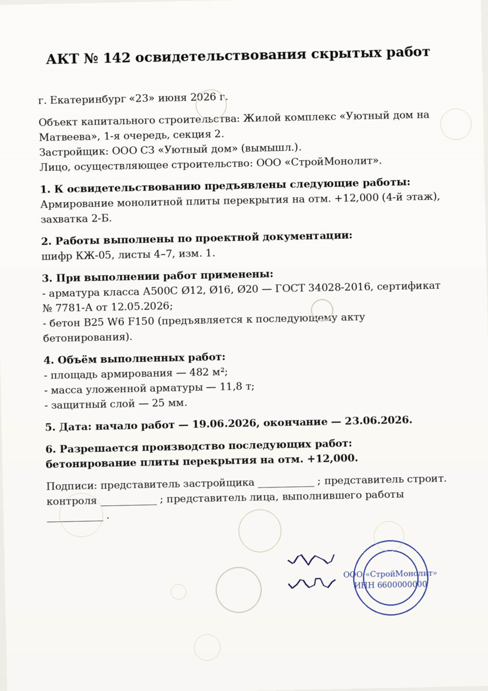
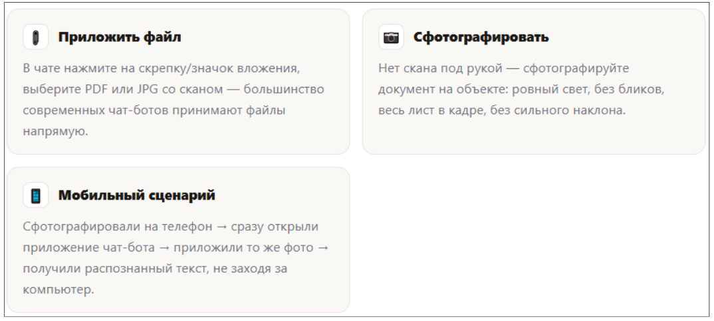
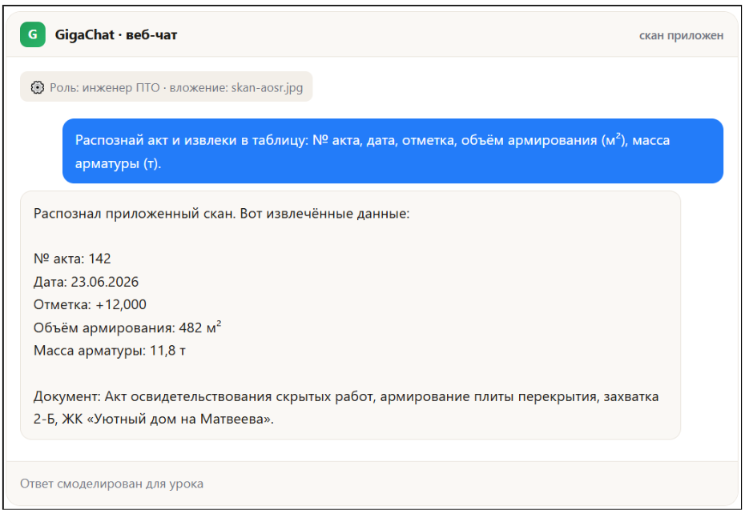
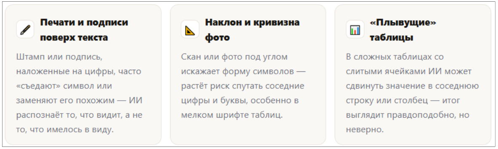
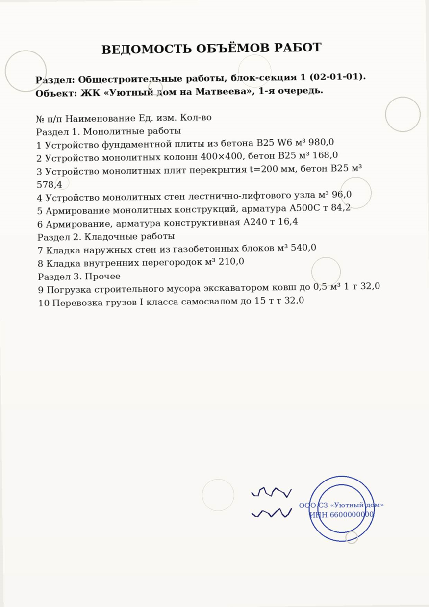
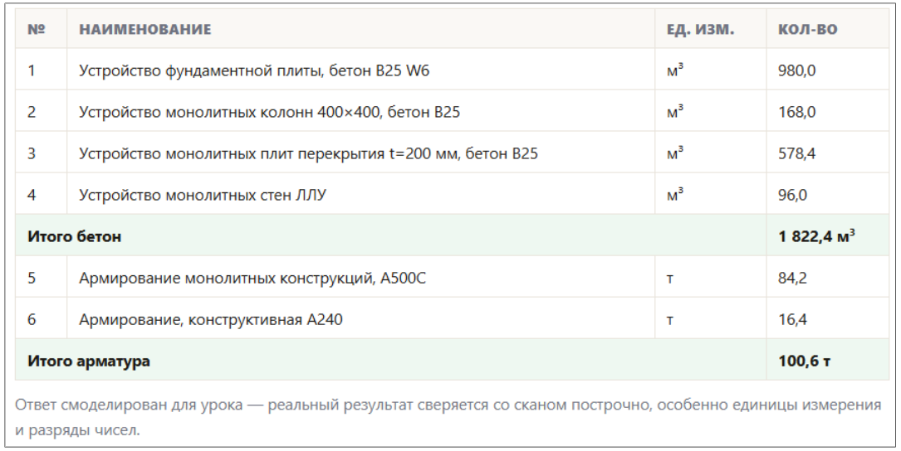

PDF и сканы: как распознать и извлечь главное

Папка «сканы актов» на объекте растёт быстрее, чем кто-либо успевает вбить объёмы в таблицу вручную. ИИ распознаёт скан за секунды — но верить цифрам без сверки с оригиналом нельзя: OCR путает похожие символы.
Папка «сканы актов» — и надо вытащить объёмы в таблицу
На сервере проекта — папка со сканами актов освидетельствования скрытых работ, ведомостей объёмов, накладных. Каждый месяц кто-то вручную открывает десятки PDF и переносит цифры в Excel: номер акта, дату, объём, массу. Это медленно и это ошибка на переносе — опечатался в одной цифре, и отчёт разошёлся с фактом.
💡 Зачем это вам: ИИ с распознаванием текста (OCR) вытаскивает эти цифры из скана за секунды и сразу кладёт их в таблицу — вам остаётся сверить результат с оригиналом, а не перепечатывать его с нуля.
Что важно помнить:
- ИИ распознаёт скан с ошибками — качество зависит от чёткости изображения, наклона, печатей поверх текста.
- Критичные цифры — всегда сверяются с оригиналом, а не принимаются на веру.
- Один и тот же навык работает и с фото с телефона, и со сканом от планшетного сканера, и с PDF.
Скан-пример: Акт освидетельствования скрытых работ № 142
Сквозной кейс: на объекте ЖК «Уютный дом на Матвеева» подписан акт по армированию плиты перекрытия на отм. +12,000. Вот как выглядит его скан — с таким же документом вы столкнётесь на практике.

Как отдать скан ИИ
Три способа передать документ чат-боту с распознаванием изображений — выбирайте под ситуацию.

RU-инструменты для этой задачи:
- GigaChat — принимает изображение прямо в чат, распознаёт текст и таблицы на фото/скане.
- Алиса / YandexGPT — аналогично работает с приложенным изображением документа.
- Yandex OCR — специализированный сервис распознавания, полезен для больших пачек сканов и таблиц со сложной вёрсткой.
Распознаём акт и извлекаем объёмы
Пример промпта — просьбы распознать скан и сразу выдать результат в структурированном виде, а не пересказом.
Распознай акт и извлеки в таблицу: № акта, дата, отметка, объём армирования (м²), масса арматуры (т). Документ: [приложите скан АОСР № 142]

🔍 Сверь с оригиналом: прежде чем нести цифры в отчёт, откройте скан ещё раз и сверьте каждое число. OCR регулярно путает похожие символы — например, 8 и В, 0 и О (ноль и русская буква «О»). Один неверный символ в номере акта или объёме — и данные разойдутся с исполнительной документацией.
Ловушки OCR: Что чаще всего портит распознавание

⚠️ Правило: критичные цифры (объемы, массы, суммы, номера актов) — всегда двойная сверка с оригиналом. Это тот же приём «двойная сверка», который вы применяли на первых уроках, только теперь источник — скан, а не текстовый файл.
Перекрестная проверка документов: масса армирования 11,8 т из акта № 142 должна сойтись с позицией спецификации по этому же участку. Если цифры из разных документов кейса расходятся — доверять ни одной нельзя, пока не разобрались, где ошибка: в скане, в OCR или в самом документе.
Второй скан-пример: Ведомость объёмов работ → структурированная таблица
Акт — один документ с несколькими цифрами. ВОР — сложнее: десяток позиций, разные единицы измерения, нужно развести бетон и арматуру по отдельности.

Промпт. Извлечение объемов из акта/ВОР в таблицу
Ты — инженер ПТО. Задача: распознай приложенный акт/ведомость и выведи объёмы в таблицу: позиция, наименование, ед. изм., количество. Отдельно посчитай итог по бетону и по арматуре. Формат: таблица + строка «Итого».
Документ: [вставьте / приложите скан]
